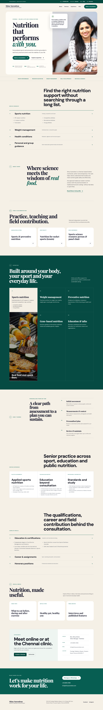
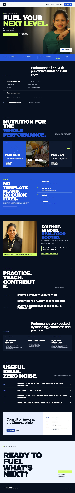
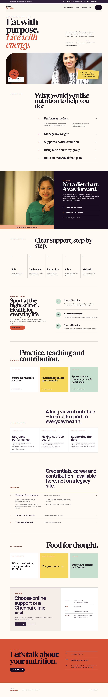

Concept 04Editorial authority
Premium and credential-led, now with fuller services, experience and a clearer appointment journey.
Client review · Comparison round 03
These successor concepts preserve the original directions while adding the proven professional-profile principles: first-viewport proof, persistent contact, clearer service hierarchy, appointment context, deeper experience and intentional desktop/mobile behavior.

Concept 04Premium and credential-led, now with fuller services, experience and a clearer appointment journey.

Concept 05Athletic and high-contrast, with a complete service map, stronger proof and corrected mobile imagery.

Concept 06Warm and goal-led, now pairing approachable discovery with immediate proof and practical clinic context.
| Dimension | Concept 04 | Concept 05 | Concept 06 |
|---|---|---|---|
| Hierarchy | Identity → proof → services → profile → process | Performance promise → proof → service map → method | Identity → proof → visitor goal → approach → journey |
| Visual tone | Premium, editorial, calm | Energetic, technical, athletic | Warm, optimistic, conversational |
| Best audience fit | Broad professional trust and referrals | Competitive and recreational athletes | Athletes plus preventive-nutrition clients |
| Strongest quality | Authority plus balanced conversion | Sports differentiation and momentum | Service discovery and human warmth |
| Main tradeoff | Calmer energy | Still the most sport-specific direction | Less formal than the editorial direction |
| Content group | Current concepts | Selected-site requirement |
|---|---|---|
| Identity, positioning and key credentials | Included | Retain; complete final wording during the selected revision. |
| Services and consultation process | Complete catalogue + journey | Confirm whether current one-month and 100-day program pricing should be published. |
| Assignments and honorary positions | Selected verified history | Expand or shorten after direction selection. |
| Testimonials and Google reviews | Deferred | Add only client-approved testimonials and review evidence. |
| Team | Blocked | Use client-supplied team names, roles, biographies and photographs. |
| Videos, articles, press and blog | On-page topic index | Build the selected-site library here, with direct approved media or publisher destinations—not legacy-site redirects. |
| Contact | Call, WhatsApp, email, map and mobile action | Reconfirm the public address before production. |
| Imagery | Approved portraits with mobile art direction | Supply sports, consultation, team and broader inclusive food imagery for the selected site. |
| Characteristic | Current concepts | Selected-site treatment |
|---|---|---|
| Clickable WhatsApp with prepared message | Included in all three | Retain as a primary enquiry path. |
| Clickable telephone and email | Included in all three | Retain. |
| Map and directions | Included in all three | Retain after address confirmation. |
| Sticky desktop contact controls | Included in all three | Retain and refine with the selected direction. |
| Sticky mobile appointment action | Included in all three | Retain. |
| Production search/social metadata | Preview-level only | Add canonical, social preview and structured profile/local-service data before launch. |
Recommendation
Concept 04 now offers the best balance of senior credibility, broad service coverage and appointment clarity. Concept 05 remains strongest for athlete acquisition, while Concept 06 is the most approachable for mixed preventive-nutrition audiences.
Please choose Concept 04, 05 or 06—or tell us the exact elements you would like combined.